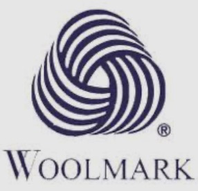
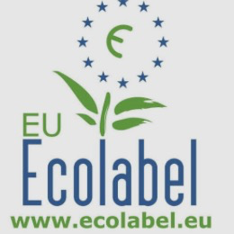
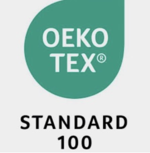
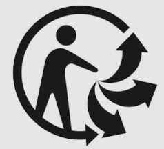

Le droit de rétractation ne vaut que pour les achats à distance : internet, téléphone, catalogue. En magasin, il n'existe pas — un échange est un geste commercial, pas un droit.
Un blouson reçu avec la fermeture cassée, une carte d'identité à refaire avant un voyage : connaître ses droits et les bonnes démarches évite bien des ennuis.
Le droit de rétractation ne vaut que pour les achats à distance : internet, téléphone, catalogue. En magasin, il n'existe pas — un échange est un geste commercial, pas un droit.
Ses coordonnées sont obligatoirement sur le site du vendeur. Sous 5 000 €, passer par lui ou par un conciliateur est obligatoire avant le tribunal.
Sur un pictogramme d'entretien, la croix interdit. Les points donnent la température, la barre impose un programme plus doux.
| Information | Sur le spécimen | Ce qu'il faut retenir |
|---|---|---|
| 1. Taille | M — EU 40 | La taille n'est pas normalisée. Un M ne vaut pas la même chose d'une marque à l'autre : seul l'essayage compte. |
| 2. Composition | 60 % COTON 38 % POLYESTER 2 % ÉLASTHANNE |
La composition est donnée en pourcentages, du plus au moins présent. Fibres naturelles (coton, lin, laine, soie) ou chimiques (polyester, élasthanne, viscose). Elle décide du confort, de la résistance et du risque d'allergie. |
| 3. Origine | FABRIQUÉ EN TUNISIE | « Fabriqué en… » indique où le vêtement a été assemblé — pas où la marque a son siège, ni où le tissu a été produit. |
| 4. Entretien | Les pictogrammes d'entretien suivent toujours le même ordre : lavage, blanchiment, séchage, repassage, nettoyage professionnel. | |
| 5. Référence et fabricant | RÉF. 4471-02 — Lot 26/07 Textiles du Sud, 34000 Montpellier |
La référence et le fabricant permettent de faire jouer une garantie ou de signaler un défaut. |
| Pictogramme | Nom | Signification |
|---|---|---|
| Lavage | La cuve. Le chiffre donne la température maximale en °C. | |
| Blanchiment | Le triangle. Vide : javel autorisée. Deux traits : oxygénée seulement. | |
| Séchage | Le carré. Avec un cercle : sèche-linge autorisé. | |
| Repassage | Le fer. Les points donnent la température. | |
| Pro | Le cercle. Nettoyage en pressing uniquement, jamais à la maison. |
| Repère | Nom | Signification |
|---|---|---|
| La croix | Interdit. Ici : ne pas laver en machine. | |
| Le chiffre | Température maximale de lavage, en degrés. | |
| La barre | Programme plus doux, essorage réduit. Deux barres : très doux. | |
| Les points | 1 = 110 °C · 2 = 150 °C · 3 = 200 °C |
| Étape | Démarche | Coût |
|---|---|---|
| Étape 1 — Le vendeur | On contacte le magasin ou le service après-vente. On garde la facture et on demande une réparation, un remplacement ou un remboursement. | Gratuit · immédiat |
| Étape 2 — L'écrit | Lettre recommandée avec accusé de réception, facture jointe. On peut aussi signaler le problème en ligne à la répression des fraudes. |
≈ 5 € · c'est la preuve obligatoire pour la suite |
| Étape 3 — Le médiateur | Le médiateur de la consommation du vendeur — ses coordonnées doivent figurer sur son site — ou le conciliateur de justice de la mairie. | Gratuit · obligatoire sous 5 000 € |
| Étape 4 — Le tribunal | En dernier recours. Tribunal de proximité pour un litige inférieur à 10 000 €, tribunal judiciaire au-delà. | Long · dernier recours |
À distance, on a 14 jours pour changer d'avis, sans avoir à se justifier, à compter de la réception. L'offre doit indiquer l'identité de l'entreprise, le prix, les frais de livraison et les modalités de paiement. Les frais de retour restent généralement à la charge de l'acheteur. Ce droit ne s'applique pas à un achat en magasin.
| Démarche | Où | Pièces à fournir | Coût |
|---|---|---|---|
| Carte d'identité | Toute mairie équipée, même hors de sa commune | Photo, justificatif de domicile, ancienne carte. Acte de naissance de moins de 3 mois pour une première demande | Gratuite 25 € si perdue ou volée Valable 10 ans |
| Passeport | Mairie équipée, après pré-demande en ligne | Les mêmes pièces, plus le timbre fiscal électronique | 86 € adulte 42 € (15-17 ans) · 17 € (moins de 15 ans) |
| Acte d'état civil | Mairie de naissance, ou en ligne sur service-public.fr | Nom, prénoms, date de naissance | Gratuit |
| Mariage civil | Mairie du domicile de l'un des deux | Pièce d'identité, acte de naissance de moins de 3 mois, justificatif de domicile, liste des témoins | Gratuit Publication des bans : 10 jours Livret de famille remis après |
| PACS | En mairie (depuis 2017) ou chez un notaire | Convention de PACS, pièce d'identité, acte de naissance de moins de 3 mois, déclaration sur l'honneur | Gratuit en mairie |
Le mariage civil suppose d'être majeur, non marié par ailleurs, sans lien de parenté proche, et de consentir librement. Le PACS est un contrat entre deux personnes majeures pour organiser leur vie commune : il n'a pas les mêmes effets qu'un mariage.
| Label | Signification |
|---|---|
 Woolmark |
Pure laine vierge, de qualité contrôlée. |
 Ecolabel UE |
Impact environnemental réduit sur tout le cycle de vie. Label public européen. |
 Oeko-Tex |
Absence de substances nocives pour la peau. Label privé, pas un label écologique. |
 Triman |
Le vêtement se trie : à déposer en point de collecte, jamais à la poubelle. |
1Tu achètes un blouson en magasin et tu le regrettes le lendemain. As-tu 14 jours pour te rétracter ? Justifie.
Non. Le droit de rétractation ne concerne que les achats à distance. En magasin, l'échange dépend de la bonne volonté du vendeur.
2Sur une étiquette, la cuve est barrée d'une croix. Que fais-tu ?
Le lavage en machine est interdit : nettoyage à la main ou en pressing selon les autres pictogrammes.
3Un fer avec deux points : à quelle température peux-tu repasser ?
Jusqu'à 150 °C.
4Litige de 300 € non résolu malgré une lettre recommandée. Quelle étape avant le tribunal ?
Saisir le médiateur de la consommation du vendeur ou un conciliateur de justice : c'est obligatoire sous 5 000 €.
5Ta carte d'identité arrive à expiration. Combien coûte son renouvellement ?
Gratuit, si l'ancienne carte est rendue. 25 € seulement en cas de perte ou de vol.